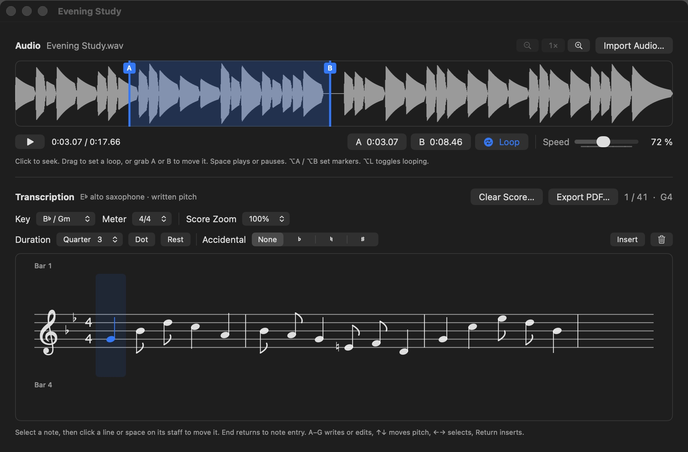
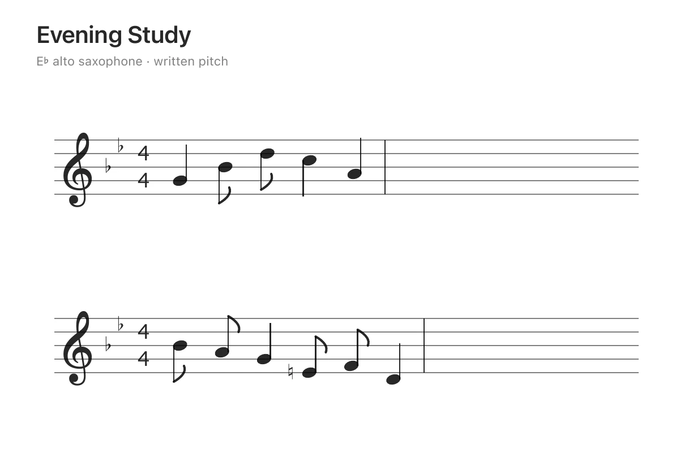

Loop the phrase
Drop in a recording, grab the A/B handles, and slow playback to 50% while keeping the original pitch.
Playback and transcription for Mac
Slow down a recording, loop a phrase, and write the notes by ear on a treble staff.
Download for MacFree beta · Apple Silicon · macOS 14 or later

Drop in a recording, grab the A/B handles, and slow playback to 50% while keeping the original pitch.
Enter notes and rests with the mouse or keyboard. Choose a key and meter, and scroll the score independently of playback.
Reopen a local project with your score and loop settings. Export a PDF when you want to print the part.
The beta is unnotarized. If macOS blocks the first launch, open System Settings → Privacy & Security and choose Open Anyway for Alto. Apple’s first-launch guide
